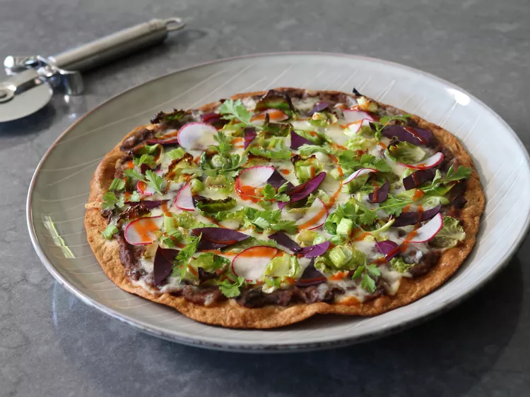

Tlayuda

Description
Pizza "Tlayuda" is a crispy, thin-crust Mexican pizza that is inspired by
one of Oaxaca’s most famous street foods. The base is a tortilla, the
sauce is made with refried beans, and it is topped with cheese and
veggies.
Ingredients
- 3 tablespoons avocado oil
- 6 large flour tortillas
- 12 ounces grated Monterey Jack, Mozzarella, or Oaxacan cheese
- 12 whole Brussels sprouts, cored and separated into leaves
- 2/3 cup sliced green onions, green parts only
- 2 tablespoons olive oil
- salt to taste
- 1/2 cup thinly sliced radishes
- 1/2 cup red chili sauce or salsa
- 1/2 cup cilantro leaves
Steps
-
Heat some of the avocado oil in a skillet over medium heat. Add 1 large
flour tortilla at a time and cook until golden brown and almost crispy,
2 to 3 minutes per side. Repeat with remaining tortillas.
- Preheat the oven to 450 degrees F (230 degrees C).
-
Spread toasted tortilla with refried black beans and sprinkle with
cheese. Top with Brussels sprouts leaves and green onions. Drizzle top
lightly with olive oil, and season with a pinch of salt.
-
Bake in the preheated oven until pizza is crispy and well browned,
cheese is melted, and Brussels sprouts leaves are nicely charred on the
edges, about 10 minutes. Transfer to a cooling rack, and let sit for 5
minutes.
-
While resting, top with radishes, hot sauce or salsa, and cilantro
leaves.